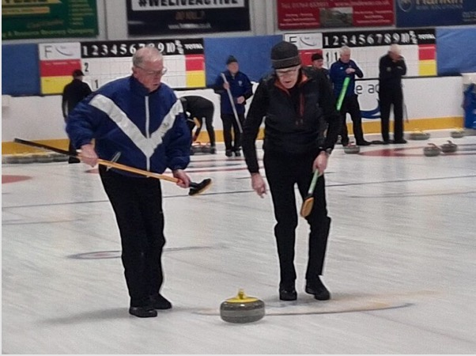
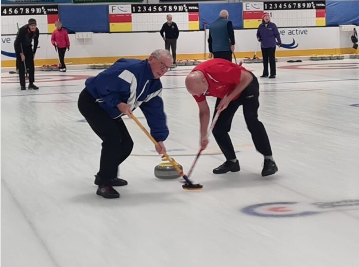
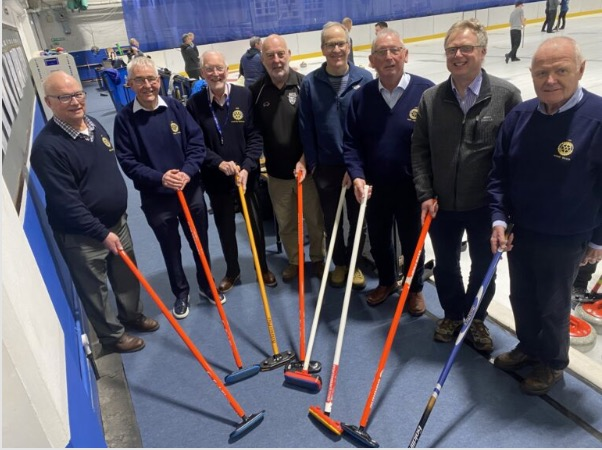

Annual Rotary Bonspiel in Perth


Many thanks to everyone who participated in the 2026 event of the Annual Rotary Charity Bonspiel at Dewars Centre, Perth, which was once again a great success, raising around £1,060 for the charities - the Matt Murdoch Foundation, the Willie Jamieson Curling Fund, and Perth Young Curlers.
On the basis that the scoring system is relatively complicated, Forfar, Dumfries Devorgilla 2, and the 2022 Rotary Tour teams, finished in the first three places, however Ayr1 and Ayr 2 can hold their heads high by achieving fourth and fifth places in an 18 strong team event.
Ayr 1 just pipped Ayr 2 by 0.25 points. However, the emphasis of the whole day was friendship and camaraderie.

The Rotary Jewel was graciously won by Forfar Rotary Club who must be congratulated for being overall winners.
A great day was had by all.
Brian Hignett, Charlie Steele, Douglas Haddow, (Ayr2) David McIntyre, Bob Cherry, Euan Lawrence, David Hope, (Ayr1) Ronnie Wilson (Ayr2)
Share this: